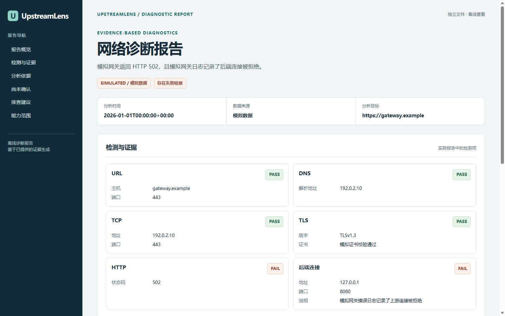

逐层检查连接
针对指定的单个 HTTP 或 HTTPS 目标，检查解析、连接、证书和响应，逐项展示状态与证据。
从 DNS、TCP、TLS 和 HTTP 到用户提供的 Nginx 错误日志，UpstreamLens 帮你整理观测结果、可能原因与仍需确认的信息。
演示使用合成数据，展示模拟故障，不涉及真实服务器诊断。

每个结论都从实际探测或用户提供的日志出发，保留无法确认的信息。
针对指定的单个 HTTP 或 HTTPS 目标，检查解析、连接、证书和响应，逐项展示状态与证据。
读取显式指定的 Nginx 错误日志，统计连接拒绝、超时、提前关闭和无可用上游等记录。
输出终端、JSON 或单文件 HTML 报告。HTML 可离线打开，日志来源和敏感字段经过隐藏处理。
使用离线演示了解报告结构，再对获授权访问的目标运行诊断，或分析自己提供的日志文件。
查看安装与使用说明 →示例命令
upstreamlens demo
upstreamlens diagnose https://example.com
upstreamlens analyze-nginx error.log
upstreamlens demo --format html --output demo.html